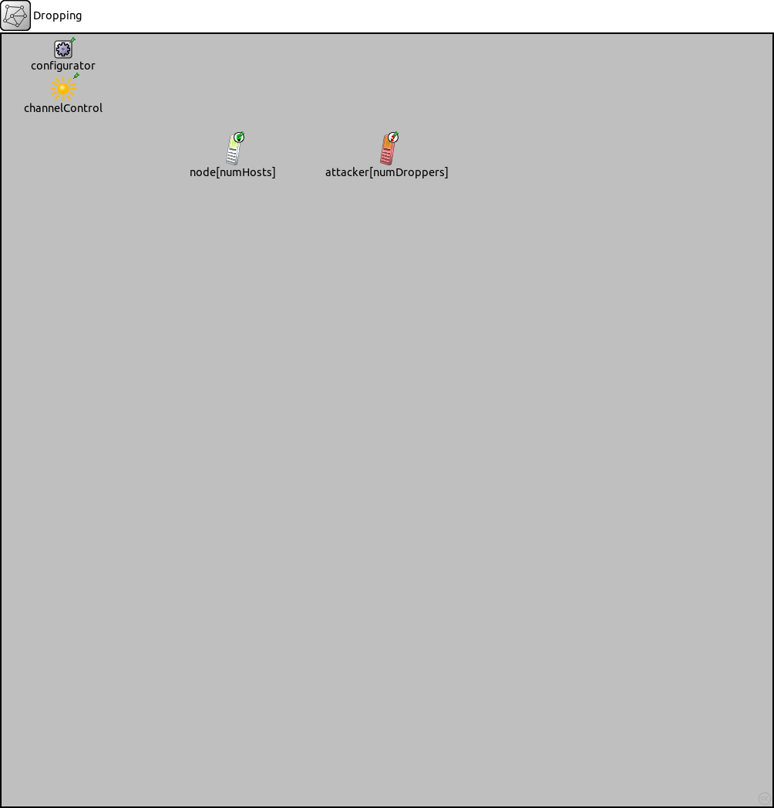
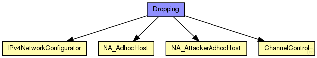
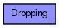

This documentation is released under the Creative Commons license
This documentation is released under the Creative Commons license(no description)
The following diagram shows usage relationships between types. Unresolved types are missing from the diagram.
The following diagram shows inheritance relationships for this type. Unresolved types are missing from the diagram.
| Name | Type | Default value | Description |
|---|---|---|---|
| numHosts | int | ||
| numDroppers | int | ||
| numFlows | int | 0 |
| Name | Value | Description |
|---|---|---|
| isNetwork | ||
| display | bgb=1000,1000,grey75 |
| Name | Type | Default value | Description |
|---|---|---|---|
| node.networkLayer.ip.procDelay | double | 0s | |
| node.networkLayer.ip.timeToLive | int | 32 | |
| node.networkLayer.ip.multicastTimeToLive | int | 32 | |
| node.networkLayer.ip.fragmentTimeout | double | 60s | |
| node.networkLayer.ip.forceBroadcast | bool | false | |
| node.networkLayer.arp.retryTimeout | double | 1s |
number seconds ARP waits between retries to resolve an IPv4 address |
| node.networkLayer.arp.retryCount | int | 3 |
number of times ARP will attempt to resolve an IPv4 address |
| node.networkLayer.arp.cacheTimeout | double | 120s |
number seconds unused entries in the cache will time out |
| node.networkLayer.arp.globalARP | bool | false | |
| node.routingTable.routerId | string | "auto" |
for routers, the router id using IPv4 address dotted notation; specify "auto" to select the highest interface address; should be left empty ("") for hosts |
| node.routingTable.forwardMulticast | bool | false |
turns multicast forwarding on/off |
| node.interfaceTable.displayAddresses | bool | true |
whether to display IP addresses on links |
| node.pcapRecorder.verbose | bool | false |
whether to log packets on the module output |
| node.pcapRecorder.pcapFile | string | "" |
the PCAP file to be written |
| node.pcapRecorder.snaplen | int | 65535 |
maximum number of bytes to record per packet |
| node.pcapRecorder.dumpBadFrames | bool | true |
enable dump of frames with hasBitError |
| node.pcapRecorder.moduleNamePatterns | string | "wlan[*] eth[*] ppp[*] ext[*]" |
space-separated list of sibling module names to listen on |
| node.pcapRecorder.sendingSignalNames | string | "packetSentToLower" |
space-separated list of outbound packet signals to subscribe to |
| node.pcapRecorder.receivingSignalNames | string | "packetReceivedFromLower" |
space-separated list of inbound packet signals to subscribe to |
| attacker.networkLayer.ip.procDelay | double | 0s | |
| attacker.networkLayer.ip.timeToLive | int | 32 | |
| attacker.networkLayer.ip.multicastTimeToLive | int | 32 | |
| attacker.networkLayer.ip.fragmentTimeout | double | 60s | |
| attacker.networkLayer.ip.forceBroadcast | bool | false | |
| attacker.networkLayer.arp.retryTimeout | double | 1s |
number seconds ARP waits between retries to resolve an IPv4 address |
| attacker.networkLayer.arp.retryCount | int | 3 |
number of times ARP will attempt to resolve an IPv4 address |
| attacker.networkLayer.arp.cacheTimeout | double | 120s |
number seconds unused entries in the cache will time out |
| attacker.networkLayer.arp.globalARP | bool | false | |
| attacker.routingTable.routerId | string | "auto" |
for routers, the router id using IPv4 address dotted notation; specify "auto" to select the highest interface address; should be left empty ("") for hosts |
| attacker.routingTable.forwardMulticast | bool | false |
turns multicast forwarding on/off |
| attacker.interfaceTable.displayAddresses | bool | true |
whether to display IP addresses on links |
| attacker.pcapRecorder.verbose | bool | false |
whether to log packets on the module output |
| attacker.pcapRecorder.pcapFile | string | "" |
the PCAP file to be written |
| attacker.pcapRecorder.snaplen | int | 65535 |
maximum number of bytes to record per packet |
| attacker.pcapRecorder.dumpBadFrames | bool | true |
enable dump of frames with hasBitError |
| attacker.pcapRecorder.moduleNamePatterns | string | "wlan[*] eth[*] ppp[*] ext[*]" |
space-separated list of sibling module names to listen on |
| attacker.pcapRecorder.sendingSignalNames | string | "packetSentToLower" |
space-separated list of outbound packet signals to subscribe to |
| attacker.pcapRecorder.receivingSignalNames | string | "packetReceivedFromLower" |
space-separated list of inbound packet signals to subscribe to |
| attacker.droppingAttack.active | bool | false |
Indicates if this attack is active or not in the node |
| attacker.droppingAttack.startTime | double | 0s |
Timestamp to start the attack |
| attacker.droppingAttack.endTime | double | 0s |
Time instant at which the attack ends, 0 means that the attack will not end during the simulation. |
| attacker.droppingAttack.droppingAttackProbability | double | 0 |
Probability of dropping a packet. Range [0,1]. |
| attacker.delayAttack.active | bool | false |
Indicates if this attack is active or not in the node |
| attacker.delayAttack.startTime | double | 0s |
Timestamp to start the attack |
| attacker.delayAttack.endTime | double | 0s |
Time instant at which the attack ends, 0 means that the attack will not end during the simulation. |
| attacker.delayAttack.delayAttackProbability | double | 0 |
Probability of delaying a packet. Range [0,1]. |
| attacker.delayAttack.delayAttackValue | double | normal(1s, 0.1s) |
Random delay time |
| attacker.sinkholeAttack.active | bool | false |
Indicates if this attack is active or not in the node |
| attacker.sinkholeAttack.startTime | double | 0s |
Timestamp to start the attack |
| attacker.sinkholeAttack.endTime | double | 0s |
Time instant at which the attack ends, 0 means that the attack will not end during the simulation. |
| attacker.sinkholeAttack.sinkholeAttackProbability | double | 0 |
Probability of answering a RREQ message with a fake route. Range [0,1]. |
| attacker.sinkholeAttack.sinkOnlyWhenRouteInTable | bool | false |
TRUE: Send fake answers to RREQ messages only when requested routes are really in routing table of sinkhole node. FALSE: Send fake answers for any RREQ messages arriving at the sinkhole node. |
| attacker.sinkholeAttack.seqnoAdded | double | uniform(20, 30) |
Fake sequence number generated. |
| attacker.sinkholeAttack.numHops | int | 1 |
Fake number of hops. |
| configurator.config | xml | xml(" |
XML configuration parameters for IP address assignment and adding manual routes |
| configurator.assignAddresses | bool | true |
assign IP addresses to all interfaces in the network |
| configurator.assignDisjunctSubnetAddresses | bool | true |
avoid using the same address prefix and netmask on different links when assigning IP addresses to interfaces |
| configurator.addStaticRoutes | bool | true |
add static routes to the routing tables of all nodes to route to all destination interfaces (only where applicable; turn off when config file contains manual routes) |
| configurator.addDefaultRoutes | bool | true |
add default routes if all routes from a source node go through the same gateway (used only if addStaticRoutes is true) |
| configurator.addSubnetRoutes | bool | true |
add subnet routes instead of destination interface routes (only where applicable; used only if addStaticRoutes is true) |
| configurator.optimizeRoutes | bool | true |
optimize routing tables by merging routes, the resulting routing table might route more packets than the original (used only if addStaticRoutes is true) |
| configurator.dumpTopology | bool | false |
print extracted network topology to the module output |
| configurator.dumpAddresses | bool | false |
print assigned IP addresses for all interfaces to the module output |
| configurator.dumpRoutes | bool | false |
print configured and optimized routing tables for all nodes to the module output |
| configurator.dumpConfig | string | "" |
write configuration into the given config file that can be fed back to speed up subsequent runs (network configurations) |
| channelControl.coreDebug | bool | false |
debug switch for core framework |
| channelControl.pMax | double | 20mW |
maximum sending power used for this network (in mW) |
| channelControl.sat | double | -110dBm |
signal attenuation threshold (in dBm) |
| channelControl.alpha | double | 2 |
path loss coefficient |
| channelControl.carrierFrequency | double | 2.4GHz |
base carrier frequency of all the channels (in Hz) |
| channelControl.numChannels | int | 1 |
number of radio channels (frequencies) |
| channelControl.propagationModel | string | "FreeSpaceModel" |
network Dropping { parameters: int numHosts; int numDroppers; int numFlows = 0; @display("bgb=1000,1000,grey75"); submodules: node[numHosts]: NA_AdhocHost { @display("p=300,150"); } attacker[numDroppers]: NA_AttackerAdhocHost { @display("p=500,150"); } configurator: IPv4NetworkConfigurator { @display("p=80,20"); } channelControl: ChannelControl { @display("p=80,70;i=misc/sun"); } }
This documentation is released under the Creative Commons license